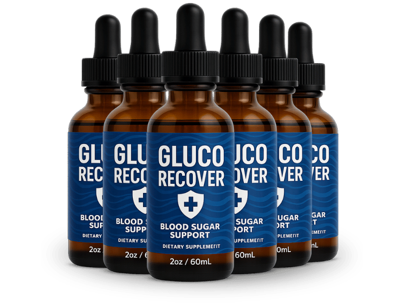

What Is Gluco Recover And How Does It Work?
You didn't lose your willpower at 3pm. You lost your balance.
A seesaw only works one way: push one end down hard, and the other end doesn't just come back up — it overshoots. That's what a spike of sugar or refined carbs does to your body. It doesn't settle you back at level. It launches you past it, into the dip on the other side, and that dip is the flat, foggy, slightly desperate feeling that shows up mid-afternoon looking for something sweet to fix it.
That's the sugar seesaw, and almost nobody knows they're on it. They just know they made it to 41 without needing an afternoon snack, and now they can't get through a Tuesday without one.
Gluco Recover is built to take the swing out of the board. It's a once-daily liquid, taken by dropper, pairing chromium picolinate with a 200mg proprietary herbal blend, formulated to support glucose metabolism already within a normal range, ease sudden cravings for sugar and carbs, and keep energy level instead of spiking and crashing.
It isn't a discipline product. It doesn't ask you to white-knuckle past the vending machine. It works underneath the craving, on the mechanism generating it — and when the board stops swinging, there's nothing left pulling you toward the snack drawer at 3pm. Consistent users describe steadier focus through the afternoon, sleep that doesn't break at 2am for a glass of water, and hands and feet that feel warmer instead of tingling by evening.
The company is upfront that this runs on a 90 to 180 day routine. A seesaw that's been swinging for twenty years doesn't level out because you push on it once.
Gluco Recover Ingredients
Nine ingredients, one job: stop the board from swinging.
- Chromium (Picolinate) — 7mcg / 20% DV: The most studied trace mineral for supporting the body's normal glucose handling. Picolinate is the bioavailable form, chosen specifically because the body actually absorbs it, unlike cheaper chromium salts that pass through largely unused.
- Gymnema Sylvestre (leaf): The name translates roughly to "sugar destroyer," and it earns it — this leaf has a documented ability to temporarily blunt the tongue's sweetness receptors, cutting the craving off at the sensory level rather than fighting it with willpower.
- Coleus Forskohlii (root): Supplies forskolin, which supports the cellular signaling that governs how efficiently the body responds to its own metabolic instructions.
- Cayenne Pepper (fruit): Delivers capsaicin, which supports thermogenesis and healthy circulation — a direct line to warmer hands and feet instead of that end-of-day tingle.
- Ginseng (root): A long-standing energy botanical, aimed squarely at the stretch of the day when the seesaw usually drops hardest.
- Maca Peruana (root): An adaptogen supporting stamina and a steadier response to daily stress, which matters because stress hormones make the swing wider, not narrower.
- Green Tea Leaf: Brings catechins that support metabolism while defending cells against oxidative stress.
- Astragalus (root): A traditional resilience tonic, rounding out the blend's support for overall vitality.
- L-Carnitine HCl: Shuttles fatty acids into the mitochondria to be burned as fuel, giving the body an alternative energy source instead of demanding another hit of sugar. Backed by L-Glutamine, L-Arginine and L-Tyrosine in the formula.
Laid out together, the pattern is deliberate: one mineral and one herb working the sugar-and-craving mechanism directly, three supporting energy and stress resilience, the rest reinforcing metabolism and circulation. Nothing pharmaceutical, nothing synthetic — just a blend built to hold the seesaw level from more than one side at once.
Gluco Recover Side Effects
There's nothing in this dropper your kitchen cabinet hasn't already introduced you to.
Chromium is a trace mineral your body needs regardless. Green tea, cayenne, ginseng and maca show up in food and traditional diets across the world. Gymnema Sylvestre has centuries of traditional use behind it. These are naturally occurring compounds at supportive amounts, not pharmaceutical agents forcing a system to behave differently than it's built to — and that distinction is exactly why tolerance issues are rare here in a way they aren't with harsher stimulant-based formulas.
Among people using Gluco Recover as directed, there's no widespread pattern of adverse reports.
Manufacturing backs that up. Gluco Recover is produced in the USA in a GMP-certified facility, under documented quality control — and because it's a liquid dropper rather than a capsule, the dose stays exactly as consistent on day ninety as it was on day one.
As with any dietary supplement, check with a healthcare professional before starting if you have an existing condition or take medication.
Gluco Recover Dosage
One dropper. That's the entire routine.
The measured dose is 1 mL, roughly two full dropper fills, taken once a day. Each 2 fl oz (60 mL) bottle runs a 30-day supply, so the liquid line on the glass is an honest tracker of whether you've actually kept up with it.
Because it's a liquid rather than a capsule, it moves through the body faster and most people find it easier to stay consistent with than remembering a pill. Mornings tend to work best — leveling the seesaw before the day starts tends to matter most for how the 3pm stretch actually feels.
Consistency carries almost the entire result here. Skip a few days here and there and you don't get a diluted version of the effect — you get functionally none of it, and the easy conclusion is that the product didn't work, when really it never got a fair run. That's the reasoning behind the manufacturer's 90 to 180 day framework, and it's why the multi-bottle options exist: they cover a full routine without a mid-month reorder, and the per-bottle cost drops the larger the kit. Every option ships through BuyGoods as a single purchase — no subscription, no recurring charge tucked into the fine print.
Stick to the one dropper. Doubling up doesn't level the board any faster.

Gluco Recover – Refund Policy
Every order carries a 60-day money-back guarantee.
Line that up against how fast this particular thing tells on itself. Afternoon cravings and energy crashes aren't subtle — you either stopped raiding the snack drawer at three or you didn't, and you'll know well inside a month. Sixty days is more room than the question actually needs, which is exactly the point: the company isn't betting on you running out the clock before you notice.
Full terms and the refund process are listed on the official Gluco Recover website.
Gluco Recover Customer Reviews
 Patricia Alvarado
Reno, NV
Verified Purchase – 6 Bottles
Patricia Alvarado
Reno, NV
Verified Purchase – 6 Bottles
"I used to negotiate with the snack drawer around 3 o'clock every single day, and I usually lost. At 54 I figured that was just my metabolism now, nothing to be done about it. Six weeks into Gluco Recover I caught myself walking past the drawer without even glancing at it. Didn't win the argument — there wasn't one to have anymore."
"The tingling in my feet by the end of the day was what finally got me to try something. I'm 62, on my feet most of the shift, and by 6pm they'd go pins-and-needles enough that I'd notice it through my boots. About a month in, I realized I'd stopped noticing it at all. Wasn't looking for that, honestly, just a bonus."
 Yvonne Castellano
Fort Collins, CO
Verified Purchase – 6 Bottles
Yvonne Castellano
Fort Collins, CO
Verified Purchase – 6 Bottles
"Waking up at two in the morning parched, every night, for probably three years — I'd stopped even mentioning it to my husband because it felt like nothing could be done. Somewhere around week five that stopped happening. I noticed because I woke up at 6am confused about why I'd slept the whole night through. At 57 I didn't expect anything to still surprise me like that."
Gluco Recover – Where To Buy
A quick word on where you actually order this, because it's the step people skip and regret.
Gluco Recover isn't sold through Amazon, eBay, or Walmart. Bottles that look nearly identical do turn up there anyway, and with a liquid botanical formula, a marketplace listing can't tell you how it was stored or whether it sat somewhere hot — heat breaks down botanical extracts in ways that never show on the label.
The part people find out too late: the refund only applies to an order placed through the official channel. Support works the same way — a marketplace purchase leaves no record with the manufacturer, so the sixty-day guarantee never actually attaches to it.
Ordering direct is what keeps the real formula, the stated manufacturing standard, and a refund you can actually collect all connected to the same purchase. Confirm you're on the official Gluco Recover site before checking out.
To ensure you're getting the authentic product, most users choose to visit the official website directly.
Is Gluco Recover A Scam?
No — and the giveaway is in a claim the company refuses to make.
This category is crowded with formulas promising to "cure" or "reverse" a condition, which is language a legitimate supplement is never legally allowed to use. Gluco Recover doesn't reach for it. It says it supports levels already within the normal range — narrower, more careful, and worth far less in a headline than the version competitors run with. A company chasing quick sales doesn't choose the honest phrase over the one that converts better.
The rest holds up around it: a named mineral at a stated dose, a fully disclosed herbal blend instead of a "proprietary formula" hiding the list, GMP-certified US manufacturing, a single BuyGoods purchase with nothing recurring, and a 60-day guarantee that doesn't require the bottles back.
Here's where it stops being the whole answer: energy crashes and sugar cravings can come from more than one place, and a botanical formula supporting glucose metabolism reaches some people more than others. If your situation calls for real testing, get tested — that outranks anything sold in a bottle.
But if you've spent years on the sugar seesaw — bracing for the afternoon drop, losing the argument with the snack drawer, waking up thirsty at two in the morning — the math here is simple. Sixty guaranteed days. Try it, and if the board never levels out, you send it back and the only thing it cost you was the waiting. As with any dietary supplement, check with a healthcare professional before starting if you have an existing condition or take medication.
For those who want to verify product details or check current availability, the official Gluco Recover website remains the safest and most reliable option.